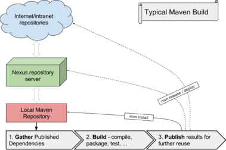
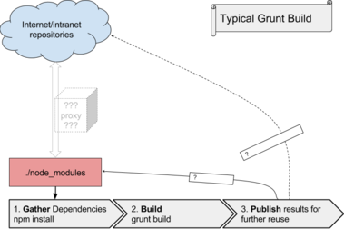

NPMPACK maven plugin simplifies integration of UI build, performed by NodeJs/NPM based tools like Grunt, into Maven build.
It is designed to:
 
The important piece here is the Nexus server (or in general, Maven Repository Manager).
It acts as the caching proxy, which isolates build of the project from temporary outages. Cached artifacts are typically available on your local network.
Another important point is that Maven’s local repository is outside the project source tree, and is therefore not frequently cleaned.
It introduces yet another level of caching, this time directly at the machine.
With grunt, which uses node and npm for preparing dependencies, there is no such component. Theoretically, a generic caching HTTP proxy can be involved to handle its role, and probably some already exists. TODO: explore this.
But here comes the other disadvantage of node approach: the local cache is (by default) in the node_modules directory, and is therefore subject to frequent cleanup. This makes the build frequently exposed to interaction with network, typically internet, and therefore very sensitive to various kinds of outages. Simply, less stable.
The problematic part is that npm gathers dependencies in directory node_modules during every build.
To prevent this, the npmpack-maven-plugin takes complete care about this directory. That is:
We assume that npm dependencies (expressed in the package.json file) do not change very often. Therefore, as noted above, we differentiate between two build types:
This is the everyday build, intended for use in Jenkins and most developer usecases. To enforce it, add -Dnpmpack.allowNpmInstall=false to Maven commandline - but it is a default, unless your POMs define otherwise.
During this build, we allow NPM to install components, or different versions, from internet. This gives the developer an opportunity to take care with any issues that NPM may have. To use it, add -Dnpmpack.allowNpmInstall to your Maven Commandline.
In this case, the plugin does not fail when package.json is changed; instead, it invokes npm install and generates new package. The developer should upload this new package into a Nexus (or other Maven Repository Manager) so that CI and other developers can use it.
Note that the generated artifact comes together with generated pom file, to avoid any mistakes during upload.